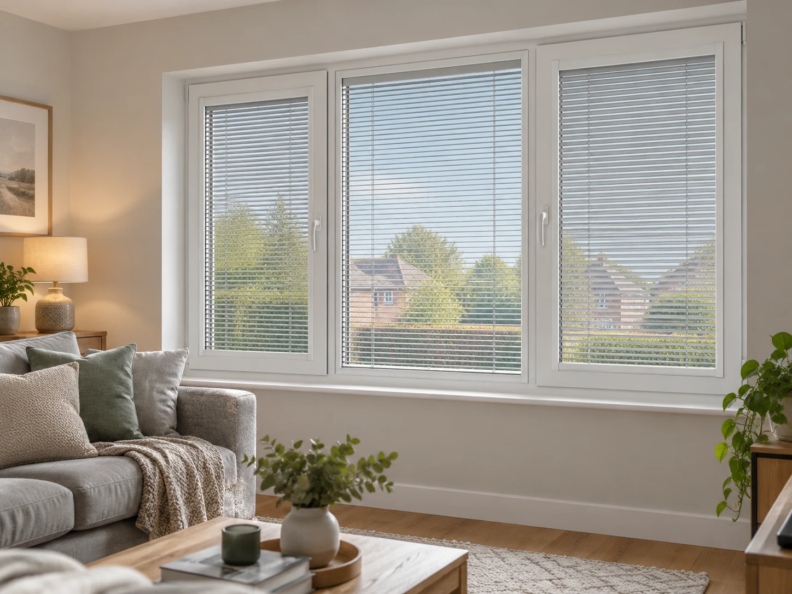
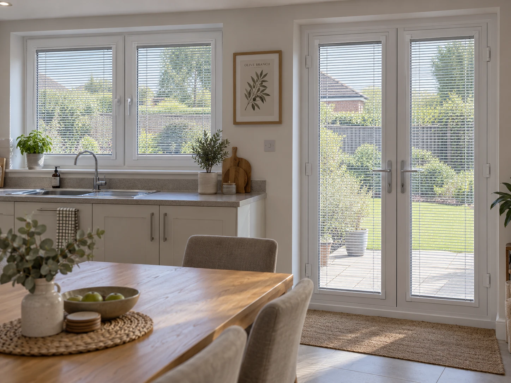
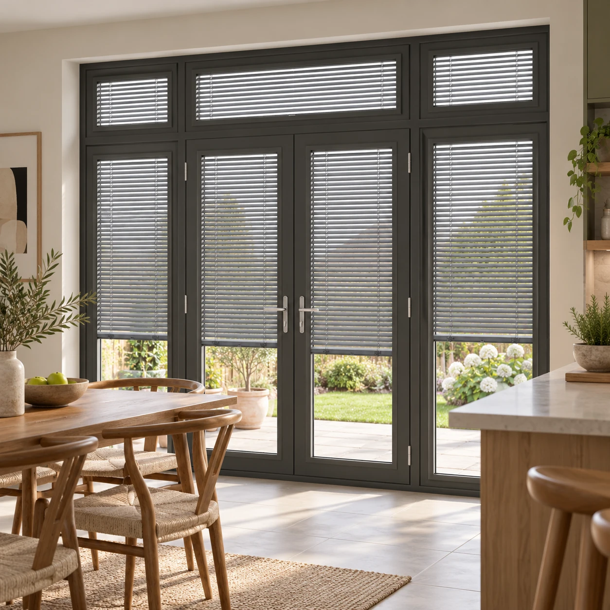

Perfect Fit Blinds,
made to measure.
A blind that clips directly onto your uPVC windows and doors, with no drilling and nothing fixed into the frame. Clean, cordless and simple to remove — measured and fitted by hand, free of charge, across Braintree and surrounding areas.
- Free measuring & fitting
- No drilling or screws
- Child-safety compliant

No drilling. No mess. No compromise.
A Perfect Fit blind isn't fixed to the window at all — it's built into its own slim frame that simply clips onto the bead of a uPVC window or door, held in place by small brackets that grip the frame rather than screw into it. There's nothing drilled, nothing glued, and nothing left behind if it's ever removed.
Inside that frame can be a Venetian, pleated or cellular blind, tilted or raised using a small side-mounted control rather than a hanging cord or chain. That makes it a genuinely cordless design, which is why it's such a popular choice for French doors, bifolds and anywhere little hands or pets are around the window.
Because the frame does the work of holding everything square and taut, the blind sits flush and neat against the glass whatever the window is doing — including doors that open and close throughout the day, where the blind simply moves with it rather than needing to be lifted clear.
It's also the blind of choice for new-build homes and rented properties, precisely because it leaves the window frame exactly as it found it — no holes, no fixings, nothing to repair if you ever want to take it down.
See them in your own light.
From a triple bay window to full-height French doors — a few of the settings Perfect Fit blinds work beautifully in.


Built for uPVC, from the inside out.
A no-drill frame that clips straight onto your window or door, with a cordless blind built right in.
No drilling or screws
The frame clips onto the window bead with small brackets — nothing fixed into the uPVC itself.
Fully cordless
Tilted and raised with a small side control rather than a hanging cord or chain.
Moves with the door
Fitted to French and bifold doors, the blind travels with the door rather than needing to be lifted clear.
Leaves no mark
Nothing drilled or glued, so it unclips cleanly if you ever remove it — ideal for rented homes.
A choice of blind styles
Venetian, pleated or cellular fabrics built into the frame, in a wide range of colours and finishes.
The details.
Everything gets confirmed against your own windows and doors at the free measuring visit — this is a starting point for what's on offer.
- Fitting
- No-drill frame, clipped directly onto the uPVC window or door bead
- Blind Styles
- Venetian, pleated or cellular, built into the Perfect Fit frame
- Control
- Cordless side-mounted tilt & lift control
- Frame Colours
- White, cream, anthracite grey & wood-effect finishes
- Child Safety
- Fully cordless as standard, with no hanging cords or chains
- Best Suited To
- uPVC windows, French doors, bifolds & patio doors
- Measuring & Fitting
- Free of charge
Perfect Fit Blinds, answered.
Everything homeowners usually ask before choosing Perfect Fit. Can't see yours? Get in touch and we'll answer it directly.
A Perfect Fit blind sits inside its own slim frame that clips directly onto the bead of a uPVC window or door — no drilling, no screws, and nothing fixed to the frame itself. The blind — usually a Venetian, pleated or cellular style — is built into that frame, so it tilts and lifts without any visible cords hanging loose.
No. Because the frame simply clips onto the existing bead with no drilling or fixings into the uPVC, there's nothing to damage and nothing that affects a window or door's warranty — which is exactly why it's the preferred option for new-build homes and rented properties.
Yes — it's one of the most popular uses. Because there are no hanging cords, Perfect Fit blinds are a practical, safe choice for doors that get opened and closed regularly, and the blind moves with the door rather than needing to be lifted out of the way.
Yes. Since the frame simply unclips from the window bead, a Perfect Fit blind can be removed without any mess or repair work — handy if you're renting, or if you'd like to take a favourite blind with you when you move.
Most Perfect Fit orders are made and fitted within two to three weeks of your free measuring visit, depending on the style and fabric you choose.
Prefer a traditional headrail instead? Take a look at our Metal Venetians.
View Metal VenetiansLet's get your windows measured.
Free measuring & fitting, and you'll choose your finish in your own home — no showroom.